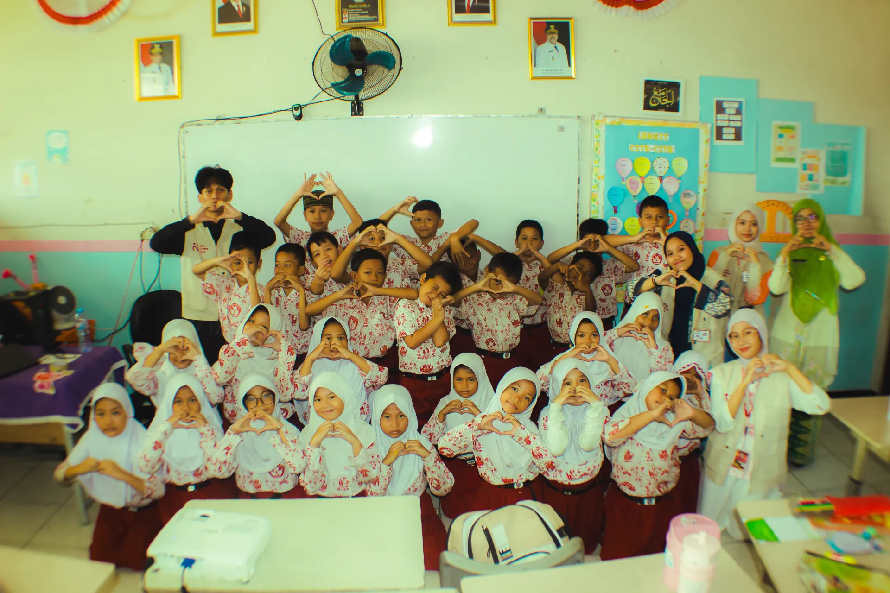

Fun & Meaningful, Happiness for Everyone
Gabung jadi Keluarga Bahagia lewat program seru tiap minggu.
Kita Bahagia adalah ruang untuk bertemu, berbagi waktu, dan melakukan hal baik bersama. Kegiatannya sederhana, tapi kami ingin setiap orang yang datang merasa nyaman untuk ikut terlibat.
Tidak formal berlebihan. Cukup hangat, terbuka, dan memberi ruang untuk benar-benar hadir.
Kami memandang kegiatan sebagai momen berbagi waktu, cerita, dan energi, bukan sekadar tugas.
Mahasiswa, pekerja, komunitas, atau orang yang baru mulai ingin ikut. Semua boleh hadir.
Setiap program dibuat agar peserta merasa jelas, tenang, dan siap mengikuti prosesnya.
Kita Bahagia hadir untuk orang-orang yang ingin ikut, tapi tidak ingin ikut dengan rasa malu, terburu-buru, atau merasa harus sempurna. Di sini, setiap orang diberi tempat untuk datang dengan caranya sendiri.

Ada kegiatan yang terasa ringan dan hangat, ada juga yang lebih dalam dan berdampak. Yang semuanya punya satu kesamaan: kami datang untuk benar-benar hadir, bukan sekadar mengikuti ritme acara.

Kegiatan yang sering dimulai dari hal kecil, lalu jadi momen yang membuat orang datang kembali.
Lihat detail →
Program yang memberi ruang pada ide, interaksi, dan kebersamaan tanpa harus selalu formal.
Lihat detail →
Momen di mana pengalaman dan ilmu dibagi secara sederhana, tapi tetap menyentuh.
Lihat detail →Ajak teman, organisasi kampus, atau komunitasmu untuk ikut hadir. Kebersamaan yang hangat sering jadi alasan orang mau datang lagi.
Lihat Kolaborasi →
Kita Bahagia bisa menjadi partner untuk kegiatan CSR, employee engagement, atau program sosial yang ingin terasa lebih manusiawi dan lebih dekat dengan komunitas.
Bahas KolaborasiMulai dari satu kegiatan. Temui orang baru. Ambil bagian dalam momen yang terasa nyata. Pulang dengan cerita, dan ikut menumbuhkan kebahagiaan yang tidak berhenti di satu hari saja.
Only a life lived for others is a life worthwhile
— Albert Einstein